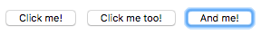
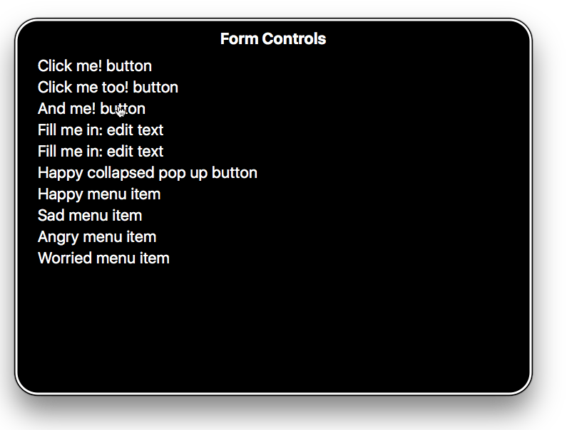
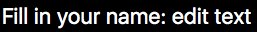
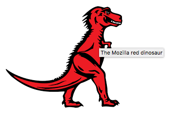

HTML: A good basis for accessibility
A great deal of web content can be made accessible just by making sure the correct Hypertext Markup Language elements are used for the correct purpose at all times. This article looks in detail at how HTML can be used to ensure maximum accessibility.
| Prerequisites: | Familiarity with HTML, CSS, a basic understanding of accessibility concepts. |
|---|---|
| Learning outcomes: |
|
HTML and accessibility
As you learn more about HTML — read more resources, look at more examples, etc. — you'll keep seeing a common theme: the importance of using semantic HTML (sometimes called POSH, or Plain Old Semantic HTML). This means using the correct HTML elements for their intended purpose as much as possible.
You might wonder why this is so important. After all, you can use a combination of CSS and JavaScript to make just about any HTML element behave in whatever way you want. For example, a control button to play a video on your site could be marked up like this:
<div>Play video</div>
But as you'll see in greater detail later on, it makes sense to use the correct element for the job:
<button>Play video</button>
Not only do HTML <button>s have some suitable styling applied by default (which you will probably want to override), they also have built-in keyboard accessibility — users can navigate between buttons using the Tab key and activate their selection using Space, Return or Enter.
Semantic HTML doesn't take any longer to write than non-semantic (bad) markup if you do it consistently from the start of your project. Even better, semantic markup has other benefits beyond accessibility:
- Easier to develop with — as mentioned above, you get some functionality for free, plus it is arguably easier to understand.
- Better on mobile — semantic HTML is arguably lighter in file size than non-semantic spaghetti code, and easier to make responsive.
- Good for SEO — search engines give more importance to keywords inside headings, links, etc. than keywords included in non-semantic
<div>s, etc., so your documents will be more findable by customers.
Let's get on and look at accessible HTML in more detail.
Good semantics
We've already talked about the importance of proper semantics, and why we should use the right HTML element for the job. This cannot be ignored, as it is one of the main places that accessibility is badly broken if not handled properly.
Out there on the web, the truth is that people do some very strange things with HTML markup. Often, misuse of HTML is because of legacy practices that haven't gone away yet, but sometimes it occurs because authors don't know any better. Whatever the case, you should replace bad code with good semantic markup wherever possible, in both static HTML pages and dynamically-generated HTML from server-side code or client-side JavaScript frameworks such as React.
Sometimes you are not in a position to get rid of lousy markup — your pages might be dependant on server-side code or web/framework components that you have no control over, or you might have third-party content on your page (such as ad banners).
The goal isn't "all or nothing"; every improvement you can make will help the cause of accessibility.
Use well-structured text content
One of the best accessibility aids a screen reader user can have is an excellent text structure with headings, paragraphs, lists, etc. A good semantic example might look something like the following:
<h1>My heading</h1>
<p>This is the first section of my document.</p>
<p>I'll add another paragraph here too.</p>
<ol>
<li>Here is</li>
<li>a list for</li>
<li>you to read</li>
</ol>
<h2>My subheading</h2>
<p>
This is the first subsection of my document. I'd love people to be able to
find this content!
</p>
<h2>My 2nd subheading</h2>
<p>
This is the second subsection of my content, which I think is more interesting
than the last one.
</p>
We've prepared a version with longer text for you to try out with a screen reader (see good-semantics.html). If you try navigating through this, you'll see that this is pretty easy to navigate:
- The screen reader reads each header out as you progress through the content, notifying you what a heading is, what is a paragraph, etc.
- It stops after each element, letting you go at whatever pace is comfortable for you.
- You can jump to the next/previous heading in many screen readers.
- You can also bring up a list of all headings in many screen readers, allowing you to use them as a handy table of contents to find specific content.
People sometimes write headings, paragraphs, etc. using line breaks and adding HTML elements purely for styling, something like the following:
<span style="font-size: 3em">My heading</span> <br /><br />
This is the first section of my document.
<br /><br />
I'll add another paragraph here too.
<br /><br />
1. Here is
<br /><br />
2. a list for
<br /><br />
3. you to read
<br /><br />
<span style="font-size: 2.5em">My subheading</span>
<br /><br />
This is the first subsection of my document. I'd love people to be able to find
this content!
<br /><br />
<span style="font-size: 2.5em">My 2nd subheading</span>
<br /><br />
This is the second subsection of my content. I think is more interesting than
the last one.
If you try our longer version out with a screen reader (see bad-semantics.html), you'll not have a very good experience — the screen reader hasn't got anything to use as signposts, so you can't retrieve a useful table of contents, and the whole page is seen as a single giant block, so it is just read out in one go, all at once.
There are other issues too beyond accessibility — it is harder to style the content using CSS, or manipulate it with JavaScript, for example, because there are no elements to use as selectors.
Use clear language
The language you use can also affect accessibility. In general, you should use clear language that is not overly complex and doesn't use unnecessary jargon or slang terms. This not only benefits people with cognitive or other disabilities; it benefits readers for whom the text is not written in their first language, younger people…, everyone, in fact! Apart from this, you should try to avoid using language and characters that don't get read out clearly by the screen reader. For example:
- Don't use dashes if you can avoid it. Instead of writing 5–7, write 5 to 7.
- Expand abbreviations — instead of writing Jan, write January.
- Expand acronyms, at least once or twice, then use the
<abbr>tag to describe them.
Structure page sections logically
You should use appropriate sectioning elements to structure your webpages, for example navigation (<nav>), footer (<footer>), and repeating content units (<article>). These provide extra semantics for screen readers (and other tools) to give users extra clues about the content they are navigating.
For example, a modern content structure could look something like this:
<header>
<h1>Header</h1>
</header>
<nav>
<!-- main navigation in here -->
</nav>
<!-- Here is our page's main content -->
<main>
<!-- It contains an article -->
<article>
<h2>Article heading</h2>
<!-- article content in here -->
</article>
<aside>
<h2>Related</h2>
<!-- aside content in here -->
</aside>
</main>
<!-- And here is our main footer that is used across all the pages of our website -->
<footer>
<!-- footer content in here -->
</footer>
You can find a full example here.
In addition to having good semantics and an attractive layout, your content should make logical sense in its source order — you can always place it where you want using CSS later on, but you should get the source order right to start with, so what screen reader users get read out to them will make sense.
Use semantic UI controls where possible
By UI controls, we mean the main parts of web documents that users interact with — most commonly buttons, links, and form controls. In this section, we'll look at the basic accessibility concerns to be aware of when creating such controls. Later articles on WAI-ARIA and multimedia will look at other aspects of UI accessibility.
One key aspect of the accessibility of UI controls is that by default, browsers allow them to be manipulated by the keyboard. You can try this out using our native-keyboard-accessibility.html example (see the source code). Open this in a new tab, and try pressing the tab key; after a few presses, you should see the tab focus start to move through the different focusable elements. The focused elements are given a highlighted default style in every browser (it differs slightly between different browsers) so that you can tell what element is focused.

Note: You can enable an overlay that shows the page tabbing order in your developer tools. For more information see: Accessibility Inspector > Show web page tabbing order.
You can then press Enter/Return to follow a focused link or press a button (we've included some JavaScript to make the buttons alert a message), or start typing to enter text in a text input. Other form elements have different controls; for example, the <select> element can have its options displayed and cycled between using the up and down arrow keys.
You essentially get this behavior for free, just by using the appropriate elements, for example:
<h1>Links</h1>
<p>This is a link to <a href="https://www.mozilla.org">Mozilla</a>.</p>
<p>
Another link, to the
<a href="https://developer.mozilla.org">Mozilla Developer Network</a>.
</p>
<h2>Buttons</h2>
<p>
<button data-message="This is from the first button">Click me!</button>
<button data-message="This is from the second button">Click me too!</button>
<button data-message="This is from the third button">And me!</button>
</p>
<h2>Form</h2>
<form>
<div>
<label for="name">Fill in your name:</label>
<input type="text" id="name" name="name" />
</div>
<div>
<label for="age">Enter your age:</label>
<input type="text" id="age" name="age" />
</div>
<div>
<label for="mood">Choose your mood:</label>
<select id="mood" name="mood">
<option>Happy</option>
<option>Sad</option>
<option>Angry</option>
<option>Worried</option>
</select>
</div>
</form>
This means using links, buttons, form elements, and labels appropriately (including the <label> element for form controls).
However, this is another case where people sometimes do strange things with HTML. For example, you sometimes see buttons marked up using <div>s, for example:
<div data-message="This is from the first button">Click me!</div>
<div data-message="This is from the second button">Click me too!</div>
<div data-message="This is from the third button">And me!</div>
But using such code is not advised — you immediately lose the native keyboard accessibility you would have had if you'd just used <button> elements, plus you don't get any of the default CSS styling that buttons get. In the rare to non-existent case when you need to use a non-button element for a button, use the button role and implement all the default button behaviors, including keyboard and mouse button support.
Building keyboard accessibility back in
Adding such advantages back in takes a bit of work (you can see an example in our fake-div-buttons.html example — also see the source code). Here we've given our fake <div> buttons the ability to be focused (including via tab) by giving each one the attribute tabindex="0". We also include role="button" so screen reader users know they can focus on and interact with the element:
<div data-message="This is from the first button" tabindex="0" role="button">
Click me!
</div>
<div data-message="This is from the second button" tabindex="0" role="button">
Click me too!
</div>
<div data-message="This is from the third button" tabindex="0" role="button">
And me!
</div>
Basically, the tabindex attribute is primarily intended to allow tabbable elements to have a custom tab order (specified in positive numerical order), instead of just being tabbed through in their default source order. This is nearly always a bad idea, as it can cause major confusion. Use it only if you really need to, for example, if the layout shows things in a very different visual order to the source code, and you want to make things work more logically. There are two other options for tabindex:
tabindex="0"— as indicated above, this value allows elements that are not normally tabbable to become tabbable. This is the most useful value oftabindex.tabindex="-1"— this allows not normally tabbable elements to receive focus programmatically, e.g., via JavaScript, or as the target of links.
While the above addition allows us to tab to the buttons, it does not allow us to activate them via the Enter/Return key. To do that, we had to add the following bit of JavaScript:
document.onkeydown = (e) => {
// The Enter/Return key
if (e.key === "Enter") {
document.activeElement.click();
}
};
Here we add a listener to the document object to detect when a button has been pressed on the keyboard. We check what button was pressed via the event object's key property; if the key pressed is Enter/Return, we run the function stored in the button's onclick handler using document.activeElement.click(). activeElement which gives us the element that is currently focused on the page.
This is a lot of extra hassle to build the functionality back in. And there's bound to be other problems with it. Better to just use the right element for the right job in the first place.
Use meaningful text labels
UI control text labels are very useful to all users, but getting them right is particularly important to users with disabilities.
You should make sure that your button and link text labels are understandable and distinctive. Don't just use "Click here" for your labels, as screen reader users sometimes get up a list of buttons and form controls. The following screenshot shows our controls being listed by VoiceOver on Mac.

Make sure your labels make sense out of context, read on their own, as well as in the context of the paragraph they are in. For example, the following shows an example of good link text:
<p>
Whales are really awesome creatures.
<a href="whales.html">Find out more about whales</a>.
</p>
but this is bad link text:
<p>
Whales are really awesome creatures. To find out more about whales,
<a href="whales.html">click here</a>.
</p>
Note: You can find a lot more about link implementation and best practices in our Creating links article. You can also see some good and bad examples at good-links.html and bad-links.html.
Form labels are also important for giving you a clue about what you need to enter into each form input. The following seems like a reasonable enough example:
Fill in your name: <input type="text" id="name" name="name" />
However, this is not so useful for disabled users. There is nothing in the above example to associate the label unambiguously with the form input and make it clear how to fill it in if you cannot see it. If you access this with some screen readers, you may only be given a description along the lines of "edit text."
The following is a much better example:
<div>
<label for="name">Fill in your name:</label>
<input type="text" id="name" name="name" />
</div>
With code like this, the label will be clearly associated with the input; the description will be more like "Fill in your name: edit text."

As an added bonus, in most browsers associating a label with a form input means that you can click the label to select or activate the form element. This gives the input a bigger hit area, making it easier to select.
Note: You can see some good and bad form examples in good-form.html and bad-form.html.
You can find a nice explanation of the importance of proper text labels, and how to investigate text label issues using the Firefox Accessibility Inspector, in the following video:
Accessible data tables
A basic data table can be written with very simple markup, for example:
<table>
<tr>
<td>Name</td>
<td>Age</td>
<td>Pronouns</td>
</tr>
<tr>
<td>Gabriel</td>
<td>13</td>
<td>he/him</td>
</tr>
<tr>
<td>Elva</td>
<td>8</td>
<td>she/her</td>
</tr>
<tr>
<td>Freida</td>
<td>5</td>
<td>she/her</td>
</tr>
</table>
But this has problems — there is no way for a screen reader user to associate rows or columns together as groupings of data. To do this, you need to know what the header rows are and if they are heading up rows, columns, etc. This can only be done visually for the above table (see bad-table.html and try the example out yourself).
Now have a look at our punk bands table example — you can see a few accessibility aids at work here:
- Table headers are defined using
<th>elements — you can also specify if they are headers for rows or columns using thescopeattribute. This gives you complete groups of data that can be consumed by screen readers as single units. - The
<caption>element and the<table>element'ssummaryattribute both do similar jobs — they act as alt text for a table, giving a screen reader user a useful quick summary of the table's contents. The<caption>element is generally preferred as it makes its content accessible to sighted users too, who might also find it useful. You don't really need both.
Note: See our HTML table accessibility article for more details about accessible data tables.
Text alternatives
Whereas textual content is inherently accessible, the same cannot necessarily be said for multimedia content — image and video content cannot be seen by visually-impaired people, and audio content cannot be heard by hearing-impaired people. We cover video and audio content in detail in the Accessible multimedia, but for this article we'll look at accessibility for the humble <img> element.
We have a simple example written up, accessible-image.html, which features four copies of the same image:
<img src="dinosaur.png" />
<img
src="dinosaur.png"
alt="A red Tyrannosaurus Rex: A two legged dinosaur standing upright like a human, with small arms, and a large head with lots of sharp teeth." />
<img
src="dinosaur.png"
alt="A red Tyrannosaurus Rex: A two legged dinosaur standing upright like a human, with small arms, and a large head with lots of sharp teeth."
title="The Mozilla red dinosaur" />
<img src="dinosaur.png" aria-labelledby="dino-label" />
<p id="dino-label">
The Mozilla red Tyrannosaurus Rex: A two legged dinosaur standing upright like
a human, with small arms, and a large head with lots of sharp teeth.
</p>
The first image, when viewed by a screen reader, doesn't really offer the user much help — VoiceOver for example reads out "/dinosaur.png, image". It reads out the filename to try to provide some help. In this example the user will at least know it is a dinosaur of some kind, but often files may be uploaded with machine-generated file names (e.g., from a digital camera) and these file names would likely provide no context to the image's content.
Note: This is why you should never include text content inside an image — screen readers can't access it. There are other disadvantages too — you can't select it and copy/paste it. Just don't do it!
When a screen reader encounters the second image, it reads out the full alt attribute — "A red Tyrannosaurus Rex: A two legged dinosaur standing upright like a human, with small arms, and a large head with lots of sharp teeth.".
This highlights the importance of not only using meaningful file names in case so-called alt text is not available, but also making sure that alt text is provided in alt attributes wherever possible.
Note that the contents of the alt attribute should always provide a direct representation of the image and what it conveys visually. The alt should be brief and concise and include all the information conveyed in the image that is not duplicated in the surrounding text.
The content of the alt attribute for a single image differs based on the context. For example, if the photo of Fluffy is an avatar next to a review for Yuckymeat dog food, alt="Fluffy" is appropriate. If the photo is part of Fluffy's adoption page for the animal rescue society, information conveyed in the image that is relevant for a prospective dog parent that is not duplicated in the surrounding text should be included. A longer description, such as alt="Fluffy, a tri-color terrier with very short hair, with a tennis ball in her mouth." is appropriate. As the surrounding text likely has Fluffy's size and breed, that is not included in the alt. However, as the dog's biography likely doesn't include hair length, colors, or toy preferences, which the potential parent needs to know, it is included. Is the image outdoors, or does Fluffy have a red collar with a blue leash? Not important in terms of adopting the pet and therefore not included. All information image conveys that a sighted user can access and is relevant to the context is what needs to be conveyed; nothing more. Keep it short, precise, and useful.
Any personal knowledge or extra description shouldn't be included here, as it is not useful for people who have not seen the image before. If the ball is Fluffy's favorite toy or if a sighted user can't know that from the image, then don't include it.
One thing to consider is whether your images have meaning inside your content, or whether they are purely for visual decoration, and thus have no meaning. If they are decorative, it is better to write an empty text as a value for alt attribute (see Empty alt attributes) or to just include them in the page as CSS background images.
Note: Read HTML images and Responsive images for a lot more information about image implementation and best practices. You can also check An alt Decision Tree to learn how to use an alt attribute for images in various situations.
If you do want to provide extra contextual information, you should put it in the text surrounding the image, or inside a title attribute, as shown above. In this case, most screen readers will read out the alt text, the title attribute, and the filename. In addition, browsers display title text as tooltips when moused over.

Let's have another quick look at the fourth method:
<img src="dinosaur.png" aria-labelledby="dino-label" />
<p id="dino-label">The Mozilla red Tyrannosaurus…</p>
In this case, we are not using the alt attribute at all — instead, we have presented our description of the image as a regular text paragraph, given it an id, and then used the aria-labelledby attribute to refer to that id, which causes screen readers to use that paragraph as the alt text/label for that image. This is especially useful if you want to use the same text as a label for multiple images — something that isn't possible with alt.
Note:
aria-labelledby is part of the WAI-ARIA spec, which allows developers to add in extra semantics to their markup to improve screen reader accessibility where needed.
Figures and figure captions
HTML includes two elements — <figure> and <figcaption> — which associate a figure of some kind (it could be anything, not necessarily an image) with a figure caption:
<figure>
<img
src="dinosaur.png"
alt="The Mozilla Tyrannosaurus"
aria-describedby="dinodescr" />
<figcaption id="dinodescr">
A red Tyrannosaurus Rex: A two legged dinosaur standing upright like a
human, with small arms, and a large head with lots of sharp teeth.
</figcaption>
</figure>
While there is mixed screen reader support of associating figure captions with their figures, including aria-labelledby or aria-describedby creates the association if none is present. That said, the element structure is useful for CSS styling, plus it provides a way to place a description of the image next to it in the source.
Empty alt attributes
<h3>
<img src="article-icon.png" alt="" />
Tyrannosaurus Rex: the king of the dinosaurs
</h3>
There may be times where an image is included in a page's design, but its primary purpose is for visual decoration. You'll notice in the code example above that the image's alt attribute is empty — this is to make screen readers recognize the image, but not attempt to describe the image (instead they'd just say "image", or similar).
The reason to use an empty alt instead of not including it is because many screen readers announce the whole image URL if no alt is provided. In the above example, the image is acting as a visual decoration to the heading it's associated with. In cases like this, and in cases where an image is only decoration and has no content value, you should include an empty alt in your img elements. Another alternative is to use the aria role attribute role="presentation" as this also stops screen readers from reading out alternative text.
Note: If possible you should use CSS to display images that are only decorative.
More on links
Links (the <a> element with an href attribute), depending on how they are used, can help or harm accessibility. By default, links are accessible in appearance. They can improve accessibility by helping a user quickly navigate to different sections of a document. They can also harm accessibility if their accessible styling is removed or if JavaScript causes them to behave in unexpected ways.
Link styling
By default, links are visually different from other text in both color and text-decoration, with links being blue and underlined by default, purple and underlined if visited, and with a focus-ring when they receive keyboard focus.
Color should not be used as the sole method of distinguishing links from non-linking content. Link text color, like all text, has to be significantly different from the background color (a 4.5:1 contrast). In addition, links should visually be significantly different from non-linking text, with a minimum contrast requirement of 3:1 between link text and surrounding text and between default, visited, and focus/active states and a 4.5:1 contrast between all those state colors and the background color.
onclick events
Anchor tags are often abused with the onclick event to create pseudo-buttons by setting href to "#" or "javascript:void(0)" to prevent the page from refreshing.
These values cause unexpected behavior when copying or dragging links, opening links in a new tab or window, bookmarking, and when JavaScript is still downloading, errors out, or is disabled. This also conveys incorrect semantics to assistive technologies (e.g., screen readers). In these cases, it is recommended to use a <button> instead. In general you should only use an anchor for navigation using a proper URL.
External links and linking to non-HTML resources
Links that open in a new tab or window via the target="_blank" declaration and links to whose href value points to a file resource should include an indicator about the behavior that will occur when the link is activated.
People experiencing low vision conditions, who are navigating with the aid of screen reading technology, or who have cognitive concerns may become confused when the new tab, window, or application is opened unexpectedly. Older versions of screen reading software may not even announce the behavior.
Link that opens a new tab or window
<a target="_blank" href="https://www.wikipedia.org/"
>Wikipedia (opens in a new window)</a
>
Link to a non-HTML resource
<a target="_blank" href="2017-annual-report.ppt"
>2017 Annual Report (PowerPoint)</a
>
If an icon is used in place of text to signify this kind of links behavior, make sure it includes an alternate description.
Skip links
A skip link, also known as skipnav, is an a element placed as close as possible to the opening <body> element that links to the beginning of the page's main content. This link allows people to bypass content repeated throughout multiple pages on a website, such as a website's header and primary navigation.
Skip links are especially useful for people who navigate with the aid of assistive technology such as switch control, voice command, or mouth sticks/head wands, where the act of moving through repetitive links can be a laborious task.
Proximity
Large amounts of interactive content—including anchors—placed in close visual proximity to each other should have space inserted to separate them. This spacing is beneficial for people who suffer from fine motor control issues and may accidentally activate the wrong interactive content while navigating.
Spacing may be created using CSS properties such as margin.
Summary
You should now be well-versed in writing accessible HTML for most occasions. In the next article, we'll give you some tests that you can use to check how well you've understood and retained all this information.